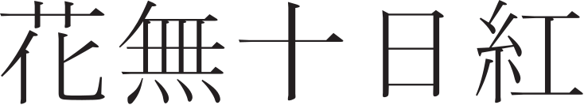
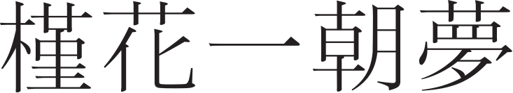

쓰디 쓴 것이
고통이 지나면
다 하면
단 것이 오겠지
기쁨이 오듯이
고진감래 中, 바밍타이거
지루하게
선명하기보다는
흐릿해도
흥미롭게
R.P.G. Shine 中, W & Whale
내가 지금 마음이
차가운 건
따뜻한 적이
있었기 때문이야
등산은 왜 할까 中, 장기하와 얼굴들
언니 사람들은
언니의 삶이 아깝다고들 말을 해
10년, 20년 뒤였다면
모두 고개를 끄덕거렸을까
언젠가 내 시간도
그리 귀하지 않은 때가 올까
그때가 되면 무엇도
아까워하지 않고 우린 잠이 들까
삶과 잠과 언니와 나 中, 이랑

젊음도, 힘도, 영원할 것 같은 순간도 결국 지나간다.그러니 붙잡으려 하기보다, 피어 있는 지금을 바라본다.
I'MMORTAL 中, 실리카겔
